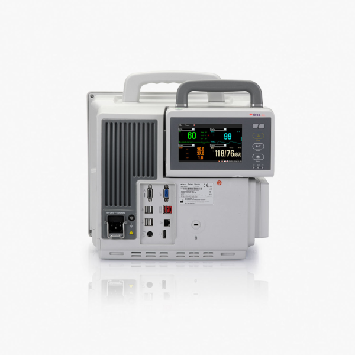
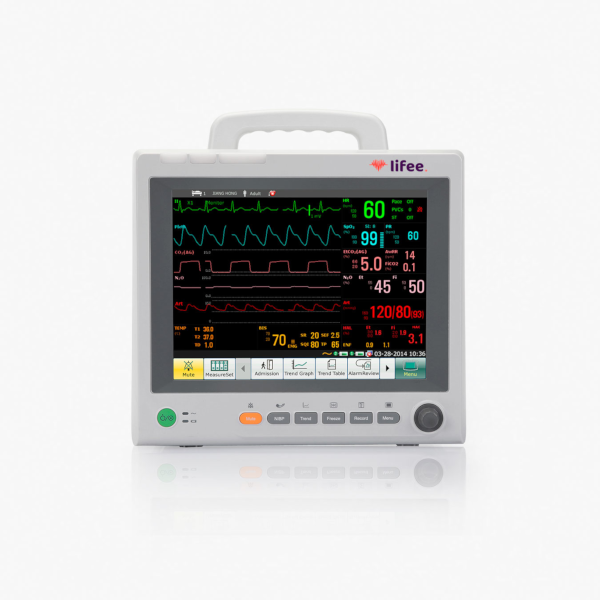

-

- 
- 
Descripción del monitor de signos vitales LMPLUS-12
- Los módulos simples ocupan una ranura única, ya sea directamente en el monitor de signos vitales o en la unidad PAM. Los módulos simples son los siguientes:
- V-SpO2: módulo de saturación de oxígeno Nellcor.
- V-CO2: módulo Respironics por tecnología mainstream.
- V-AG: módulo de gases anestésicos Masimo por tecnología mainstream.
- V-CO: módulo de gasto cardíaco (CO).
- Módulo Wi-Fi integrado (opcional).
- V-IBP: módulo de presión arterial invasiva (PAI/IBP) con dos canales. Usted puede adquirir hasta 3 de estos módulos para la medición simultánea de hasta 8 canales de IBP, considerando los canales presentes en el módulo XM.
- V-BIS: módulo de índice biespectral (BIS).
- V-ICG: módulo de cardiografía por impedancia (ICG).
+
Cotizar

+
Comprar
Servicios
-
Mantenimiento preventivo/ correctivo por evento
A equipo médico de acuerdo a necesidades de la Unidad Médica.
-
Consultoría y capacitación
Especializada en el manejo de equipos médicos y dispositivos.